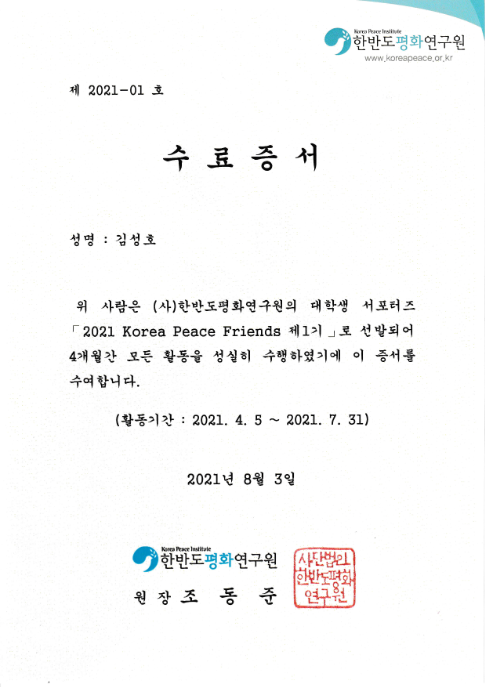

At the Korea Peace Institute, I participated in a supporter and research assistant style program focused on North Korean studies and human rights. This experience helped me explore social adaptation, vulnerable populations, and the challenges of collecting and interpreting population level data in policy related research.
This experience became an important foundation for my academic research. It helped me recognize both the value and the difficulty of collecting reliable data on vulnerable populations. More importantly, it strengthened my interest in combining research methodology, data analysis, and public policy to better understand social risk and support meaningful interventions.
